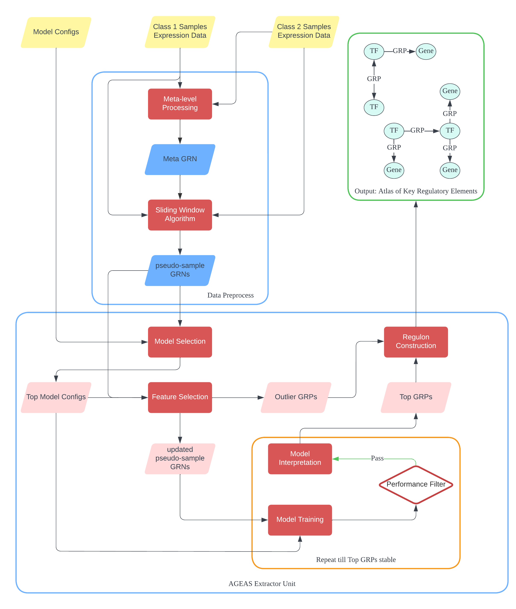

Welcome to AGEAS’s documentation!
AGEAS (AutoML-based Genetic fEatrue extrAction System) is to find key genetic factors, including genes and regulatory pathways, in determining cellular phenotype.
Note
This project is under active development.
Workflow Summary
Install
AGEAS can be installed from either PyPI
pip install ageas
or cloned from GitHub
git clone https://github.com/JackSSK/Ageas.git
cd Ageas
pip install .
Test
After installation, a performance test can be carried out with:
import ageas
ageas.Test(protocol = 'multi')